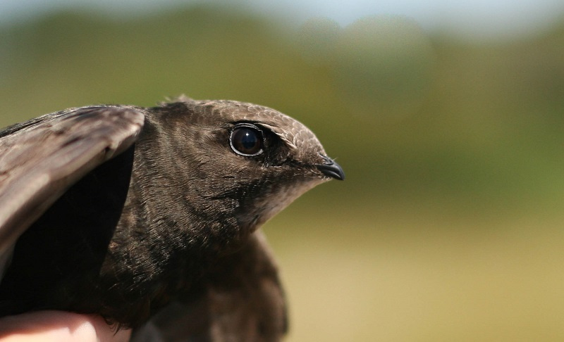

Home/Gierzwaluwonderzoek
Soortgericht onderzoek
Gierzwaluwonderzoek
De gierzwaluw brengt vrijwel zijn hele leven vliegend door en broedt uitsluitend in gebouwen. De soort is jaarrond beschermd. Blijkt uit uw quickscan dat gierzwaluwen niet zijn uit te sluiten, dan is gericht onderzoek nodig.
Vrijblijvend overleggenWanneer is gierzwaluwonderzoek verplicht?
Gierzwaluwonderzoek is nodig als uit een quickscan blijkt dat gierzwaluwen mogelijk broeden in een gebouw dat gesloopt of gerenoveerd wordt. In Nederland broeden ze uitsluitend in gebouwen: onder dakpannen, in spouwmuren, achter daklijsten en in kerktorens.
Het gaat niet alleen om de nestplaats zelf, maar om de functie van het gebouw als broedlocatie voor de kolonie. Gierzwaluwen keren jaar na jaar terug naar exact dezelfde nestplaats. Het onttrekken van nestplaatsen zonder omgevingsvergunning ffa is verboden. Het onderzoek volgt het Kennisdocument Gierzwaluw van BIJ12.

Wat onderzoeken we?
Het onderzoek brengt precies in beeld hoe de kolonie het gebouw gebruikt.
Nestlocaties
De exacte plek van de nesten van gierzwaluwen in uw gebouw.
Omvang van de kolonie
Het aantal broedparen en de grootte van de kolonie.
Aanvliegroutes
De vliegroutes en aanvliegroutes waarlangs de vogels de nestplaatsen bereiken.
Effecten en mitigatie
De gevolgen van uw werkzaamheden en de mogelijkheden voor mitigatie en compensatie.
Zo voeren wij het onderzoek uit
Volgens het Kennisdocument Gierzwaluw van BIJ12, met drie gerichte veldbezoeken.
Onderzoeksopzet
Op basis van uw quickscan plannen we drie veldbezoeken, waarvan minimaal één in de avondschemering, conform het Kennisdocument.
Veldbezoeken
Drie gerichte bezoeken in de vroege ochtend of avondschemering. We observeren in- en uitvliegende vogels, het kenmerkende gieren en nestindicatief gedrag, en letten op de aanvliegroutes.
Analyse en rapportage
Alle waarnemingen worden zorgvuldig gedocumenteerd. Het rapport toont de nestlocaties, het aantal broedparen en de aanvliegroutes, getoetst aan de Omgevingswet en houdbaar bij een omgevingsvergunning ffa.
Mitigatieplan
Wij stellen een mitigatieplan op: werken buiten de broedperiode, gierzwaluwkasten of -pannen aanbieden en waar nodig een gewenningsperiode. Dit plan is de sleutel tot een succesvolle vergunning.
Wanneer kan het onderzoek plaatsvinden?
1 juni tot 15 juli, drie veldbezoeken
In deze periode zijn de kolonies het actiefst rond de nestplaatsen. Buiten dit venster is de trefkans te laag voor een betrouwbaar onderzoek. Wacht dus niet te lang met de aanvraag, zodat het onderzoek nog dit seizoen kan plaatsvinden.
Veelgestelde vragen
Waarom is de gierzwaluw zo streng beschermd?
De gierzwaluw is een unieke vogel die vrijwel zijn hele leven vliegend doorbrengt en alleen naar de grond komt om te broeden. De soort is jaarrond beschermd en de nestplaatsen mogen nooit worden vernietigd, ook niet buiten het broedseizoen. Omdat gierzwaluwen jaar na jaar terugkeren naar dezelfde nestplaats, is behoud daarvan cruciaal.
Er broeden gierzwaluwen. Kan mijn project doorgaan?
Uw project kan doorgaan, mits u rekening houdt met de gierzwaluwen. Wij adviseren een mitigatieplan: alternatieve nestgelegenheid (gierzwaluwkasten of -pannen) aanbieden vóórdat de oorspronkelijke nestplaatsen verdwijnen. Vaak is een gewenningsperiode van minimaal één broedseizoen verplicht. Een omgevingsvergunning ffa wordt meestal verleend bij een goed onderbouwde mitigatie.
Kan ik huismus- en gierzwaluwonderzoek combineren?
Vaak wel. De veldseizoenen overlappen deels: huismusonderzoek loopt van 1 april tot 15 mei, gierzwaluwonderzoek van 1 juni tot 15 juli. Wij combineren beide onderzoeken graag, wat efficiënter en voordeliger is. Vraag naar de mogelijkheden in uw offerte.
Gierzwaluwonderzoek per provincie
Wij werken door heel Nederland. Voor deze provincies hebben wij een aparte pagina.
Gierzwaluwonderzoek nodig?
Beschrijf kort uw plan en locatie, dan ontvangt u binnen 24 uur een vrijblijvende offerte op maat. Het onderzoeksvenster is kort, dus wees op tijd.